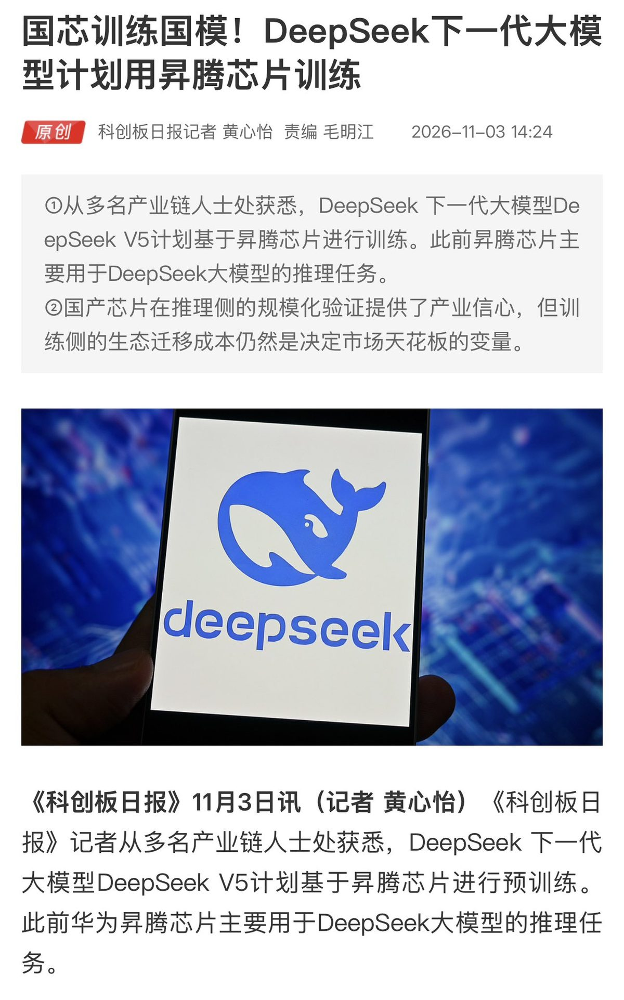

AI och tech
ObekräftatDeepSeek uppges träna nästa stora modell på Huawei-chip i stället för Nvidia

Det kinesiska AI-labbet DeepSeek planerar att förträna sin nästa stora modell, V5, huvudsakligen på Huaweis chip Ascend 950, enligt kinesiska affärsmedier som citerar källor i leverantörskedjan. Hittills har DeepSeek bara använt Huaweis chip för att köra färdiga modeller, inte för att träna dem. Varken DeepSeek eller Huawei har bekräftat uppgiften, och ett tidigare försök slutade med att labbet gick tillbaka till Nvidia.
DeepSeek, labbet bakom några av Kinas mest uppmärksammade öppna AI-modeller, planerar att förträna sin nästa flaggskeppsmodell V5 huvudsakligen på Huaweis chip Ascend 950. Det rapporterar kinesiska STAR Market Daily med hänvisning till flera källor i leverantörskedjan, enligt investeraren Guillermo Flor. Samma uppgift finns hos Cailian Press, skriver kontot ChinaBoy, och hos Caiwen, enligt @lu_chrisy84598. Varken DeepSeek eller Huawei har bekräftat.
Från att köra till att träna
Skillnaden är stor. Hittills har DeepSeek använt Huaweis chip för inferens, alltså för att köra modeller som redan tränats på annan hårdvara, påpekar ChinaBiz Insider. Med V5 skulle det för första gången bli en modell som tränas från grunden på kinesiska chip. "Inferens var det lätta provet. Träning är det riktiga", skriver Guillermo Flor. Att förträna en ledande modell är det tyngsta jobbet inom AI, och därför är det också det verkliga provet för Huawei.
Grunden finns redan. Den 30 september släppte DeepSeek öppna verktyg för träning och inferens på Ascend, som speglar dem labbet redan har för Nvidia, och ett konsortium i Shenzhen har redan gjort efterträning av V4-Pro på det äldre chippet Ascend 910C, enligt ChinaBoy. Kontot Startify skriver att V5 väntas landa på Ascend 950 nästa år, och AI-doktoranden Zekun att nästa chipgeneration, Ascend 960DT, väntas bli klar under första kvartalet 2027.
Ett enskilt konto, StarsLevels, uppger med hänvisning till TrendForce och The Information att över 160 000 Ascend-chip ska stå i ett nytt datacenter i Ulanqab i Inre Mongoliet, och att grundaren Liang Wenfeng ska ha sagt att fyra Ascend 950 motsvarar ett av Nvidias GB300. De uppgifterna har vi inte sett från fler håll.
Skepsisen
Alla är inte övertygade. DeepSeek har försökt med Huaweis hårdvara förut, när labbet tränade modellen R2, och fick då så stora problem med stabilitet och mjukvara att det gick tillbaka till Nvidia, påminner kontot sitaluto, som bevakar det kinesiska internet. V5 är enligt kontot fortfarande på planeringsstadiet, utan kända specifikationer eller tidsplan. "Jag tror på träning på Ascend när en rapport från DeepSeek säger det, med chippet i", skriver kontot. Även Thor Odinson uppmanar läsarna att se uppgiften som en signal, inte en lansering.
Exportkontrollerna
Uppgiften kommer samma dag som Financial Times rapporterar att Nvidia begränsar hur stor del av molnbolagens nya avtal som får gå till kinesiska kunder. Om ett ledande kinesiskt labb kan förträna en toppmodell utan Nvidia slutar exportkontrollerna att vara ett tak och blir i stället Huaweis bästa säljargument, skriver Guillermo Flor. Själva modellen V5 blir beviset, om den kommer.
Så vet vi det
Källmix: 9 källor – 1 expert, 5 analys, 3 debattör. Etablerad media utgör 0 av 9.
- Debattör Guillermo Flor, investerare: återger STAR Market Daily
- Analys ChinaBoy: Cailian Press och DeepSeeks öppna Ascend-verktyg
- Analys sitaluto, följer kinesiskt internet: tidigare problem med R2
- Expert Zekun, AI-doktorand: Ascend 960DT väntas 2027
- Analys ChinaBiz Insider: Ascend användes förut bara för inferens
- Analys @lu_chrisy84598 återger Caiwen
- Analys Startify: V5 på Ascend 950 nästa år
- Debattör Thor Odinson: "en signal, inte en lansering"
- Debattör StarsLevels: 160 000 chip i Ulanqab (enda källan)
Uppgiften kommer från kinesiska affärsmedier, bland andra STAR Market Daily, Cailian Press och Caiwen, som citerar anonyma källor i leverantörskedjan. Vi har inte läst originalartiklarna utan bygger på hur de återges på X. Varken DeepSeek eller Huawei har bekräftat. Uppgifterna om över 160 000 chip i Ulanqab och om grundaren Liang Wenfengs jämförelse med Nvidias GB300 kommer från ett enskilt konto och är obekräftade.
Fördjupa
Frågorna öppnar Grok i en ny flik med artikeln som underlag. AI-svar kan innehålla fel, så kontrollera mot källorna.
Läs vidare
Uppdateringslogg
- 17:25 – Artikeln publicerad.